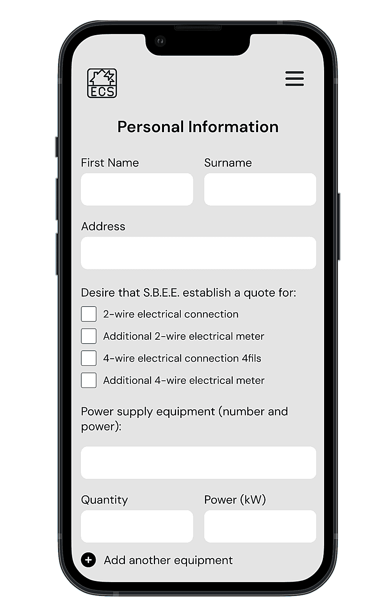
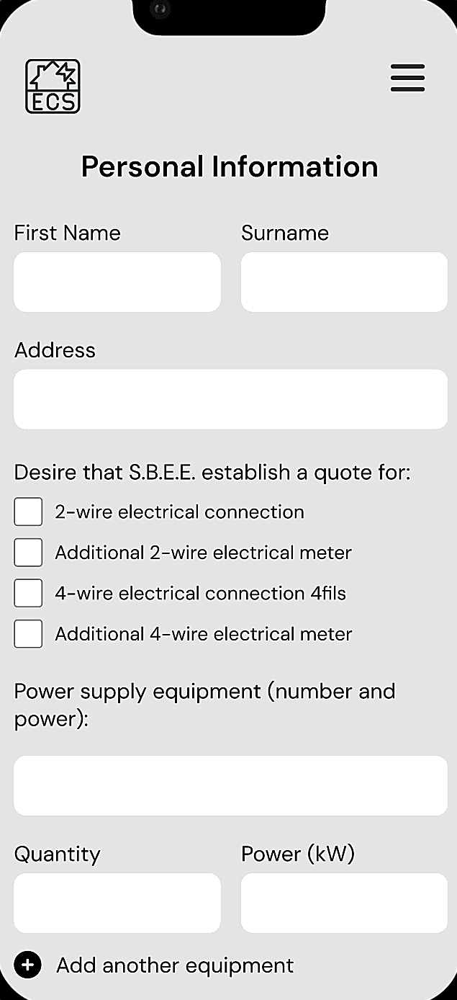
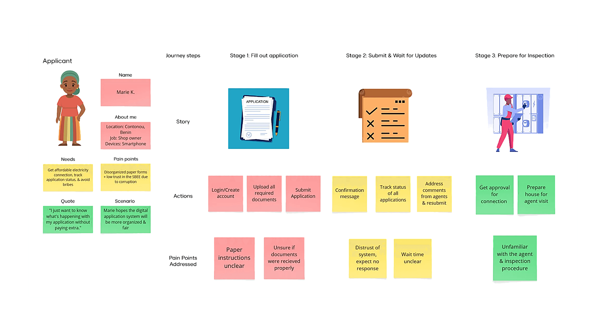
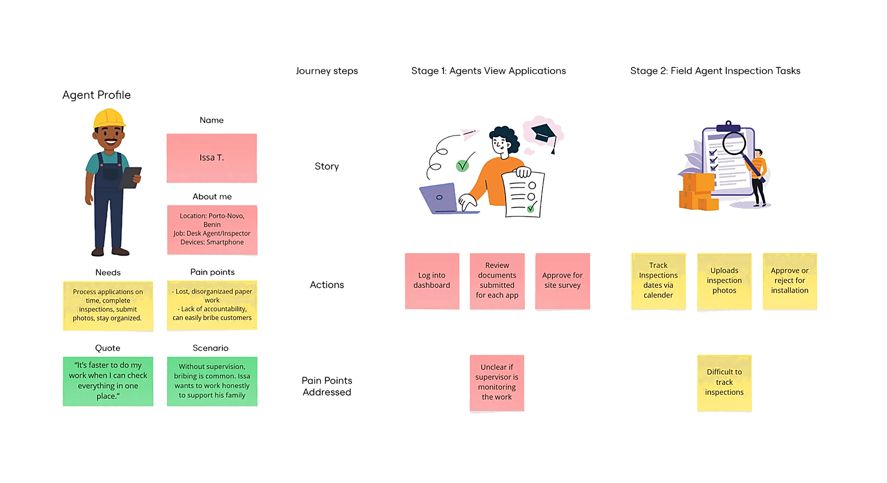
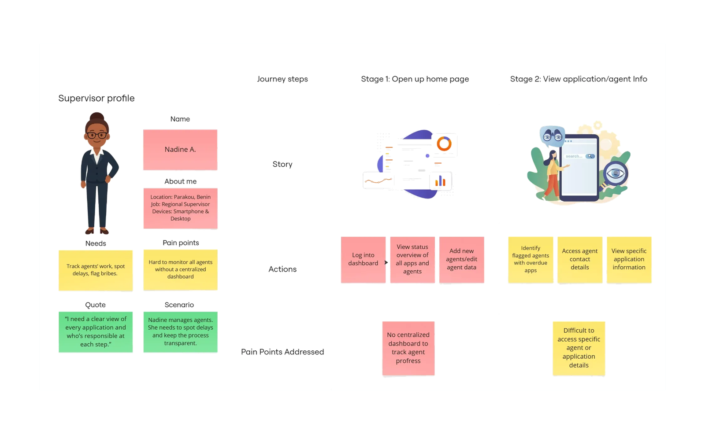
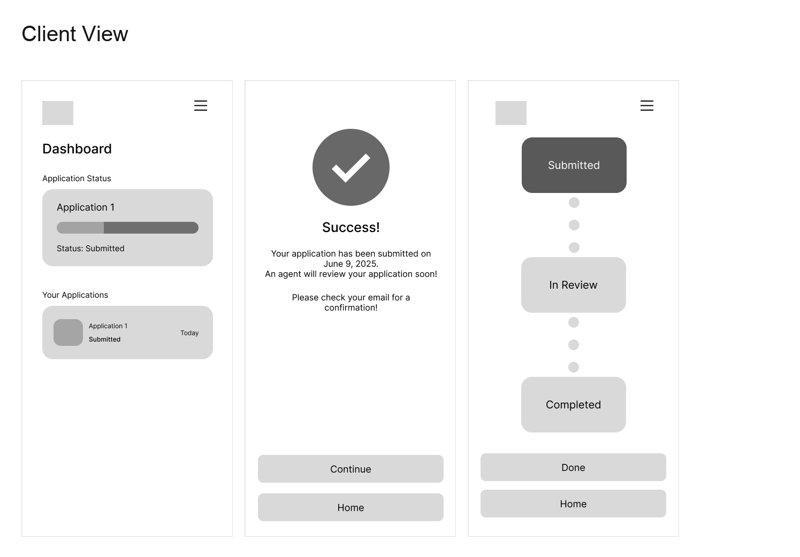
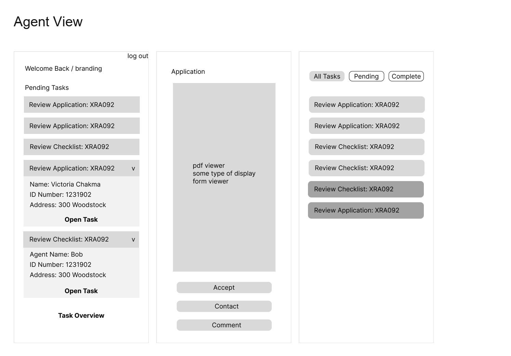
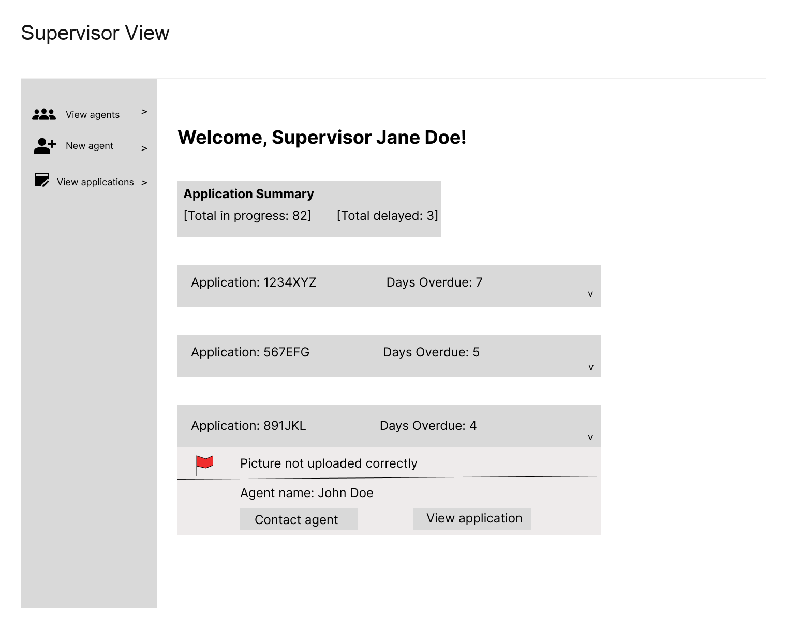

SBEE Digital: Electricity Access Platform for Benin
Many residents in Benin lack affordable electricity due to a complex application process. We designed a web and mobile platform that digitizes and streamlines applications, tracking, and SBEE employee oversight.


Challenge
Over 6 million residents in Benin are unable to afford electricity access, and the existing application process is lengthy, mismanaged, and difficult to navigate. Many applicants have low digital literacy, which makes online or technology-based processes even more challenging. They face unclear requirements, inconsistent communication, and long delays, creating major barriers to obtaining a connection.
Results
We digitized the electricity application and installation process for applicants and SBEE staff. The platform reduces processing delays, improves end-to-end transparency, and centralizes case management, enabling faster approvals and a more efficient workflow across teams.
Process
Maintaining Stakeholder Alignment Throughout the Design Process
We met weekly with our client, Jun Wong, to review design progress, clarify requirements, and document requested changes. Each cycle included internal critiques with our design mentor before presenting updates to Jun, ensuring alignment throughout the project.
Grounding the Product in Real Workflow Constraints
We worked with Jun to understand the existing electricity application workflow, identify pain points in the process, and define product requirements. This helped us map out the steps applicants and SBEE employees need to complete and where digitization could reduce delays and confusion.
Designing for Distinct User Needs and Expectations
Based on the defined requirements, we created user personas for applicants and SBEE employees. We then mapped their journeys through the application and installation process to identify friction points and opportunities for smoother, more transparent interactions.



Validating Structure and Interactions Before Visual Polish
Using the user flows as a foundation, we created low-fidelity wireframes to establish structure, layout, and core functionality. These early sketches allowed us to quickly visualize key screens and interaction patterns.



Establishing Consistency, Accessibility, and Scalability
We expanded the brand's colors and added accessible feedback states, switched to DM Sans for improved legibility across devices, and built a library of standardized UI components to ensure a consistent, cohesive platform that reduces user confusion, improves usability for diverse users, and supports efficient design and product scaling over time.
Improving Usability and Readiness for Handoff
We iterated on the low-fi wireframes into high-fidelity designs with clearer hierarchy, more intuitive navigation, and consistent visual structure, making key actions easier to find and reducing cognitive load for users. These screens represented the full web and mobile experience and prepared us for handoff and documentation.
Conclusion
Our team designed a comprehensive, user-friendly web and mobile platform for SBEE's three primary user groups:
- Applicants — Can submit electricity connection applications, track progress, and receive updates.
- Agents — Can manage inspections, upload documentation, and stay organized.
- Supervisors — Can monitor agent performance, flag delays, and ensure transparency.
The final deliverables are responsive desktop and mobile wireframes, detailed user journey maps, and a consistent design system tailored for low- to moderate-technology literacy users in Benin. We expect our designs will help SBEE streamline electricity application processing and increase accessibility. The impact can be measured by reduced application processing time, fewer reported delays, and an increase in the number of households successfully connected to electricity once these designs are implemented within a fully developed application.